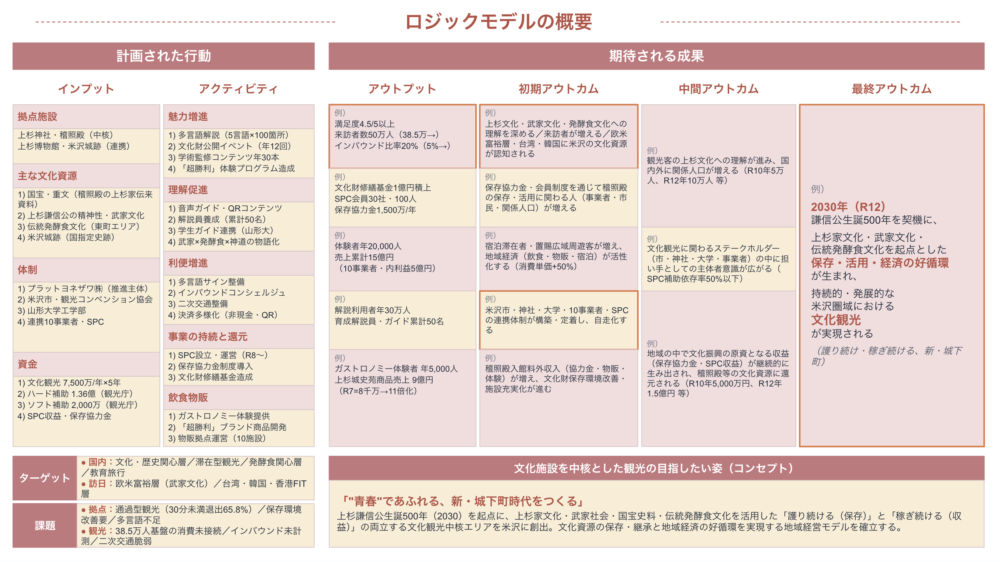

📌 結論サマリー
流用率：約65〜75% 既存ハード・ソフト両事業の調査・データ・KPI・連携体制が文化観光推進法地域計画申請に高度に転用可能。「ハード事業＋ソフト事業＋地域計画」の三位一体推進体制として整理することで、申請書の説得力が大幅に向上する。
ただし、フレーム再構成（観光資源 → 文化資源／文化観光）と文化庁固有書類（ロジックモデル・概要資料・基本方針整合）の新規作成が必要。R7総合計画とハード・ソフト両事業の成果物を「文化観光の好循環」言語に翻訳し直すことが鍵。
📊 一次データ（Agoop）流用度 95%
🎯 KPI・ベンチマーク 85%
🏗 連携体制 80%
📝 申請書本文 55%
📐 ロジックモデル ドラフト完成
⚖ 三制度の構造比較
既存・観光庁
レキマチ ハード事業
提出済 4/22
- 正式名
- 観光振興事業費補助金（地域資源を活用した観光まちづくり推進事業）
- 所管
- 観光庁 観光資源課
- 補助率
- 1/2（自己負担あり）
- 上限
- 2億円
- 対象
- 建造物の新築・改修、周辺環境整備
- 期間
- R8〜R9.2.26（約1年）
- 規模
- 10案件・27,113.5万円
既存・観光庁
レキマチ ソフト事業
提出済 4/10
- 正式名
- 歴史的資源を活用した観光まちづくり推進事業（B モデル創出）
- 所管
- 観光庁 観光資源課
- 補助率
- 定額
- 上限
- 2,000万円
- 対象
- 調査・計画策定、コンテンツ造成、モニターツアー
- 期間
- R8単年
- 成果物
- 事業計画書・モデル創出
新規・文化庁
文化観光推進法 地域計画
申請準備中
- 正式名
- 文化観光拠点施設を中核とした地域における文化観光の推進に関する法律 地域計画
- 所管
- 文化庁 文化拠点担当
- 補助率
- 2/3
- 上限
- 7,500万円／年（5年）
- 対象
- 文化資源の保存・活用・観光振興・経済循環
- 期間
- 原則5年（毎年度審査）
- 軸
- 計画認定 → 補助金活用
🔁 成果物別 流用可能性マトリクス
凡例：90%+ほぼそのまま流用 70-90%軽微な修正で流用 40-70%再構成が必要 〜40%新規作成寄り
| 成果物カテゴリ | 既存資産 | 流用度 | 必要な作業 |
|---|
| ① 一次データ（人流・属性） | Agoop モバイル空間統計：384,987人/年、休日30分未満退出65.8%、100km以遠35.5%、二次交通分析（ニューメディア） | 95% | そのまま転載可能。文化観光の文脈で「文化資源への来訪・接触」として再ラベリング |
| ② ベンチマーク比較 | 鹿島神宮（滞在型）・熊野大社（プロダクト売上6,000〜8,000万円）との比較分析 | 90% | 文化観光拠点における先進事例として転用。文化庁認定計画事例も追加 |
| ③ 課題認識・ストーリー | 通過型観光・消費転換欠如・広域吸引力未活用・インバウンド対応不足・経営企画機能不在 | 85% | 「観光の課題」を「文化資源の活用が不十分」という文化観光フレームに翻訳 |
| ④ 整備計画（ハード） | 10案件・27,113.5万円・上杉神社授与所5,000万円・東光酒蔵397万円ほか | 80% | ハード補助金で整備済の施設を「文化観光拠点施設」として位置づけ直し、稼働後の活用計画として記述 |
| ⑤ コンテンツ造成計画（ソフト） | 「超勝利」ブランド構想・体験コンテンツ造成・モニターツアー・勝利マーケット分析 | 85% | 「文化資源の理解促進・魅力発信」コンテンツとして文化観光の文脈で再構成 |
| ⑥ KPI（数値目標） | 30分未満滞在率50%へ改善／40万人以上／インバウンド計測体制／売上目標 | 85% | 文化観光は「来訪者数」「リピート率」「外国人来訪比率」「文化財理解度」等が重視されるため指標を再選定・追加 |
| ⑦ 連携体制（ステークホルダー） | 米沢市・上杉神社・山形大学・上杉コーポレーション・アジリノ・パシフィックダイナーサービス・ニューメディア・山形銀行・米沢信用金庫等 | 80% | 地域計画では複数主体の連携合意（覚書・MOU）が必要。既存ネットワークを基に文書化 |
| ⑧ 推進主体・SPC構想 | R7で合意形成済のSPC設立構想・推進体制レポート | 75% | 文化観光推進主体として再定義（文化資源の保存と活用を担う組織として位置づけ） |
| ⑨ R7総合計画・ロードマップ | 「上杉の新・城下町づくり総合計画」・2030年生誕500年マイルストーン | 70% | 文化観光推進法の「5年計画」フォーマットに合わせて期間設計を再定義 |
| ⑩ 申請書本文（地域計画 様式） | ハード様式1〜5・ソフト申請書類の文章資産 | 55% | 文化庁様式は構成・記載項目が異なる。素材は流用しつつ書き直し |
| ⑪ 概要資料（PowerPoint） | R7事業 D-1/D-2 報告書PPT・ハード様式4 事業概要 | 60% | 文化庁指定様式に合わせて再構成 |
| ⑫ ロジックモデル | —（既存事業に該当書類なし） | 20% | 新規作成必須。下記「📐 ロジックモデル ドラフト」に1ページ完結版あり（公式様式94343001_01準拠） |
| ⑬ 基本方針との整合性確認 | — | 新規 | 文化観光推進法 基本方針／運用指針 との対応関係を明示する記述を新規作成 |
| ⑭ 文化財保存・継承の観点 | 稽照殿グランドデザイン・文化財管理課題（R7で言及） | 60% | 「保存を大前提」とする文化観光の姿勢を明記 |
| ⑮ JNTO等との海外発信連携 | — | 新規 | JNTO海外宣伝活用計画を新規記述 |
| ⑯ 経済循環・再投資メカニズム | SPC設立構想・地域経済波及試算 | 70% | 「文化への再投資」の循環構造を明示する図表を作成 |
📋 既存申請との差分（要追加・要再構成事項）
✚ 新規追加が必要な書類・要素
- ロジックモデル様式（PPT）：投入→活動→アウトプット→アウトカム→インパクトの連鎖図。文化庁指定様式
- 概要資料（PPT）：文化庁指定様式での事業概要
- 連携合意書／覚書：地域計画の場合、複数主体の連携合意を文書化
- 5年計画ロードマップ：年度ごとの事業計画と中間評価対応
- JNTO等海外発信連携計画
- 基本方針・運用指針との対応表
- 文化財所有者・管理者との合意（上杉神社・稽照殿）
↻ フレーム再構成が必要
- 「観光資源」→「文化資源」用語統一。歴史的建造物・神社仏閣・伝統文化を「文化資源」として位置づけ
- 「滞在時間延長・消費拡大」→「文化資源理解の深化＋経済循環」へ目的を再定義
- 「観光まちづくり」→「文化観光推進」の文脈で再記述
- R7総合計画を「文化観光推進」の枠組みに翻訳
- ハード整備の説明を「文化資源活用のための環境整備」として再構成
- SPC構想を「文化観光推進体制」として再定義
✎ 既存資産から軽微な修正で流用
- Agoop人流分析・二次交通分析（ニューメディア）：そのまま提出可能、ラベリングのみ調整
- ベンチマーク比較：鹿島神宮・熊野大社の数値はそのまま、文化観光拠点としての位置づけを追記
- ステークホルダーリスト：R7・ハード事業で構築済のネットワーク。覚書化作業のみ追加
- 市民シンポジウム成果：合意形成プロセスの根拠として再活用
- 増田信吾氏／田原氏／黒田学部長との関係：有識者ネットワークの裏付け
- 勝利マーケット分析・「超勝利」ブランド：文化資源活用のリブランディング事例として強化
⚠ 新たな観点で記述
- 文化資源の「保存」を大前提とする姿勢：稽照殿の保存環境改善・保存協力金制度導入
- 来訪者の「文化的・歴史的背景の理解」促進：解説情報整備、多言語ガイド、ストーリーテリング
- 文化財の積極公開・活用：通常非公開コンテンツの計画的公開
- 地域文化への波及：上杉文化を核とした地域全体の文化観光化
- 持続可能な観光（GSTC等国際標準）への対応
- 地域住民の参画：保存・活用への市民エンゲージメント設計
🎯 推奨戦略：三事業一体推進フレーム
既存ハード・ソフト両事業を、文化観光推進法の枠組みで「役割分担」として位置づけ直すことで、申請書の説得力が向上します。
投入(Input)
R7総合計画・人流分析・市民合意形成済 ＋ ハード補助金（観光庁・1/2・2億円）＋ ソフト補助金（観光庁・上限2,000万円）＋ 文化観光推進法補助金（文化庁・2/3・上限7,500万円/年）
活動(Activity)
ハード事業：10施設の整備（27,113.5万円）／ソフト事業：体験コンテンツ造成・モデル創出／文化観光：解説情報整備・多言語ガイド・文化財公開・JNTO海外発信
産出(Output)
整備済10施設稼働 ＋ 「超勝利」ブランド体験プロダクト群 ＋ 文化観光中核エリア完成 ＋ 多言語解説整備 ＋ 文化財理解促進コンテンツ
成果(Outcome)
30分未満滞在率 65.8% → 50% ／ 来訪者 38.5万 → 50万＋ ／ インバウンド比率向上 ／ 上杉文化への理解度・愛着度向上 ／ 域内消費額拡大
影響(Impact)
文化資源保存への再投資の好循環確立 ／ 2030年上杉謙信公生誕500年プレ開催成功 ／ 持続可能な文化観光地モデルの確立（他地域への波及）
💰 補助金スタック試算（仮）
三事業の補助金を組み合わせた場合の最大調達額試算。文化観光推進法の補助対象は「ソフト＋計画推進」が中心のため、ハード事業との重複リスクは低い。
| 事業 | 所管 | 補助率 | 補助上限 | 主用途 |
|---|
| レキマチ ハード事業 | 観光庁 | 1/2 | 20,000万円 | 建造物整備・周辺環境整備 |
| レキマチ ソフト事業 | 観光庁 | 定額 | 2,000万円 | 調査・コンテンツ造成・モデル創出 |
| 文化観光推進法（年） | 文化庁 | 2/3 | 7,500万円 | 文化資源活用・解説情報整備・多言語化等 |
| 文化観光推進法（5年合計上限） | 文化庁 | 2/3 | 37,500万円 | ※毎年度審査（4・5年目は中間評価） |
| 単年 三事業上限合計（理論値） | 29,500万円 | ※実態は事業内容・期間で重複調整必要 |
| 5年累積 上限合計（理論値） | 59,500万円 | ※ハード単年・ソフト単年・文化観光5年 |
⚠ 補助金重複ルール：原則と運用
大原則：同一経費（同一の物品・役務・期間）に対する複数補助金からの重複交付は不可（補助金等適正化法第7条）。違反すると交付取消・返還命令の対象。
ただし、「事業主体の役割分担」「経費の対象期間・対象範囲の分離」「目的の差別化」を明確に設計すれば、複数の補助金を組み合わせて活用することは可能。実務上は申請前相談時に各省庁に「経費区分書（充当計画書）」を提示し、口頭・文書で確認を取るのが安全。
📋 経費種別×補助金 充当可否マトリクス
○ 対象（充当可）
× 対象外（充当不可）
△ 条件付き（経費分離・期間分離が必要）
| 経費種別 | ハード
(観光庁) | ソフト
(観光庁) | 文化観光
(文化庁) | 運用上の留意点 |
|---|
| 建造物の新築・改修・大規模修繕（建築工事費） | ○ | × | × | ハード専用。文化観光側は「整備済施設を前提とした活用」設計 |
| 外構・庭園整備、案内標識、解説案内板（屋外） | ○ | × | △ | 解説案内板は文化観光でも対象になり得るが、ハードと重複しない新規追加分のみ |
| 展示什器・什器類（売り場改修込み） | ○ | × | △ | ハードで整備した什器は文化観光対象外。ハード未対象の展示解説什器は文化観光対象可 |
| 多言語化（サイン・パンフレット・音声ガイド） | △ | ○ | ○ | ハードでサイン整備済の場合、文化観光は音声ガイド・アプリ・QRコンテンツ等の別カテゴリに充当 |
| 解説情報整備（学術監修・コンテンツ制作） | × | △ | ○ | 文化観光の主要対象経費。学芸員・専門家監修費含む |
| 体験コンテンツ造成・モニターツアー | × | ○ | ○ | ソフトと文化観光で対象期間・対象テーマを明確に分離 |
| 人流調査・市場調査・ベンチマーク調査 | × | ○ | △ | ソフトで実施済の調査は文化観光対象外。新たな視点の追加調査は対象可 |
| 計画策定費・コンサルティング費 | × | ○ | △ | ソフトで策定済の計画は対象外。計画の文化観光化リライト・年次更新費は対象可 |
| 人材育成（ガイド研修・運営人材育成） | × | △ | ○ | 文化観光の主要対象経費。学芸員・通訳ガイド・解説員の育成 |
| 運営費（人件費・委託費・賃借料） | × | △ | ○ | 文化観光は5年計画の運営費に充当可。ハード整備施設の修繕・維持費は対象外 |
| 広報・プロモーション（国内） | △ | ○ | ○ | 媒体・対象期間で分離。文化観光は5年継続の認知形成 |
| 海外プロモーション（インバウンド向け） | △ | × | ○ | 文化観光はJNTOとの連携協力が制度上組み込み済 |
| ICT・デジタル活用（VR/AR/アプリ） | △ | ○ | ○ | 機器購入はハード、コンテンツ制作はソフト/文化観光と切り分け |
| イベント開催費（一過性） | × | △ | △ | 5年計画の継続的取組みの一環として位置づけ可 |
| 用地取得・既存設備の単純更新 | × | × | × | 3制度とも対象外。自己資金または別補助金で対応 |
🏛 ハード10案件 × 文化観光 充当設計案
既存ハード事業10案件について、整備後の文化観光側で何に補助金を充当するかの具体案。整備費はハード／活用費は文化観光の原則で設計。
10. 上杉神社（授与所）ハード補助 2,500万円（総額5,000万円）
- ハード
- 授与所の建物改修3,200万円＋設備整備1,800万円（建造物・什器）
- 文化観光
- 多言語授与品解説（音声ガイド・QR）／神道・上杉文化の英語解説コンテンツ／参拝者向け文化体験プログラム造成／学芸員相当の解説員育成
1. （株）東光の酒蔵｜酒造資料館ハード補助 198.5万円（総額397万円）
- ハード
- 上段の間改修（インバウンド富裕層体験拠点化）・喫茶室テイスティングルーム新設・別棟トイレ改修
- 文化観光
- 創業1597年からの酒造文化解説（多言語）／発酵文化×武家文化の連携ストーリーテリング／英語ソムリエ育成／JNTO連携の海外PR
4. （株）上杉コーポレーション｜上杉城史苑ハード補助 550万円（総額1,100万円）
- ハード
- 売り場改修・什器・商品陳列改善・多言語化（物理サイン）
- 文化観光
- 「超勝利」ブランド商品の学術背景解説（上杉謙信公・武家文化）／繁体中文・韓国語・タイ語等の追加多言語対応／海外向けデジタルカタログ制作／インバウンドコンシェルジュ育成
2. （合）光悦｜小島伝承の館ハード補助 2,504.2万円（総額5,008.3万円）
- ハード
- 大正11年築古民家改修・酒粕発酵カフェ整備・物販施設整備
- 文化観光
- 「歴史×体験×文脈」コンセプトの体験プログラム造成（利き酒・発酵食ワークショップ）／古民家建築解説／米沢駅〜上杉神社の文化観光導線設計
その他施設（旧遠万織物・旧白根澤邸・東町ポケットパーク・マチスタヂオ・肉のすがい・福島屋社員寮）ハード補助 計 7,804.1万円
- ハード
- 各施設の建物改修・外構整備・新規施設整備
- 文化観光
- 東町エリア全体の文化資源回遊ガイド／伝統発酵食ゾーンの解説情報整備／滞在型観光の運営人材育成／インバウンド向け体験コンテンツ造成
📅 補助金スタッキング タイムライン（5年フロー）
R8（2026）ハード整備10施設の整備工事〜R9.2.26
ソフト推進体験コンテンツ造成・モニターツアー
文化観光 1年目解説情報整備・人材育成・基盤づくり
R9（2027）文化観光 2年目整備済施設での文化観光本格展開／JNTO連携海外PR開始／多言語デジタルコンテンツ拡充
R10（2028）文化観光 3年目運営の自立化推進／ガイド人材定着／中間評価準備
R11（2029）文化観光 4年目中間評価実施／補助額調整／成果指標達成度確認
R12（2030）文化観光 5年目謙信公生誕500年に合わせた集大成展開／持続化モデル完成
✅ 申請前相談（5/12）で文化庁に確認すべき事項
文化観光推進法 申請前相談 必須確認チェックリスト
💡 重複回避のための実務ルール（社内運用）：
- すべての経費を 「経費種別 × 補助金充当 × 年度」 の三次元で管理する原簿（Excel/Googleシート）を整備
- 同一物品・同一役務に対する仕様書・見積書・契約書は補助金別に分離発注。1件の契約に複数補助金を混在させない
- 文化観光側の発注はすべて 「ハード未充当の経費か」 をチェック → 経費区分書に記載 → 文化庁担当者と事前協議
- 会計監査・実地検査時の説明資料として、「経費充当根拠書」 を案件別に常備
🗂 レキマチ vs 赤湯・熊野大社：適用差分
⛩ レキマチ（米沢市）
流用度：高（既存資産多）
- 既存資産
- R7総合計画・ハード10案件・ソフト計画・人流データ・ベンチマーク・SPC構想
- 計画種別
- 地域計画（米沢城跡・上杉神社・上杉博物館・稽照殿・東町等の連携で面的に推進）
- 強み
- R7総合計画＋ハード27,113.5万円＋ソフト2,000万円の三位一体推進体制が既存。連携合意基盤あり
- 追加作業
- 文化観光フレームへの再構成・ロジックモデル新規作成・基本方針整合性確認
- 申請難度
- ★★☆☆☆ （既存資産活用で標準的）
♨ 赤湯&南陽市
流用度：高（観光協会R8戦略文書あり）
- 既存資産
- R8観光庁ソフト事業（987万円）戦略文書／連携10事業者同意書取得済／観光まちづくりビジョン案
- 計画種別
- 地域計画（熊野大社・赤湯温泉・赤湯駅3拠点エリア）
- 強み
- 南陽市観光協会主導の戦略策定済／ナショジオ「2026年に行くべき25選」山形県唯一選出／ミシュランキー2施設
- 追加作業
- 文化観光フレームへの言語翻訳・文化財保存観点の追加・ロジックモデル新規作成
- 申請難度
- ★★☆☆☆ （観光協会戦略文書を活用で標準的）
💡 並行申請戦略
R8で2件同時申請
- 米沢市
- R7総合計画＋ハード/ソフト事業の三位一体ベース
- 赤湯&南陽市
- R8観光庁ソフト事業の戦略文書ベース／申請主体は南陽市観光協会
- 共通
- 5/12申請前相談締切に向けて並行作業／プラットヨネザワが両案件の事務局支援
- 5年累計上限
- 2件 × 7,500万円/年 × 5年 = 最大7.5億円規模
📐 ロジックモデル サンプル（新規作成・申請素材）
流用マトリクス⑫の 「新規作成必須」 の中核成果物。文化庁公式様式（94343001_01.pptx）の6段階構造に、レキマチ案件のドラフトを反映した1ページ完結版を作成しました。そのまま正式提出のたたき台として活用可能です。下部に詳細展開（4目標マトリクス／KPIマップ）も用意。
📄 公式様式 94343001_01 準拠ドラフト ― 米沢市
PowerPoint版・即時提出可能形式

構成：左側「計画された行動」（インプット／アクティビティ）と右側「期待される成果」（アウトプット／初期・中間・最終アウトカム）を縦糸とし、下部にターゲット・課題・コンセプトを配置。
オレンジ枠は文化庁様式で重視される指標箇所をハイライト。
記載値はR7総合計画・ハード/ソフト事業のKPIから逆算した初期案。申請前相談（5/12）で関係者と再検証・合意形成のうえ確定してください。
⓪ 5段階フロー（全体像・解説用）
1投入 Input / Resources
- 補助金：ハード2億・ソフト2,000万・文化観光7,500万/年×5年
- 既存資産：R7総合計画／人流分析／ベンチマーク／SPC構想
- 文化資源：稽照殿（国宝・重文）・上杉神社・米沢城跡・伝統発酵食
- 連携体制：米沢市・上杉神社・山形大学・地元事業者10者
- 専門家：増田信吾氏・田原氏・黒田学部長
2活動 Activity
- 保存活用基盤：稽照殿の保存環境改善・保存協力金制度導入
- 解説情報整備：多言語（日英中韓泰）・音声ガイド・QR
- コンテンツ造成：「超勝利」ブランド体験
- 人材育成：解説員養成・通訳ガイド研修
- 海外発信：JNTO連携・多言語デジタルカタログ
- 運営基盤：SPC設立・モニターツアー
3アウトプット Output
- 整備済10施設の文化観光拠点化
- 多言語解説整備：5言語×100箇所
- 体験コンテンツ造成：年20プログラム
- 育成解説員・ガイド：累計50名
- JNTO連携海外発信：年4回以上
- 「超勝利」ブランド商品：30SKU
4アウトカム Outcome
- 30分未満滞在率 65.8% → 50%
- 年間来訪者数 38.5万 → 50万人
- 外国人来訪者比率 5% → 20%
- 域内消費額 一人当たり +50%
- 文化財理解度 80%以上
- 保存協力金収入：年1,500万円
5インパクト Impact
- 2030年：謙信公生誕500年プレ事業の成功
- 持続可能な文化観光モデルの確立
- 地域GDP寄与：累計100億円超
- 文化への再投資好循環の制度化
- 「Yonezawa＝武家文化」の国際的認知
- UIターン促進・住民の誇り醸成
① 文化観光推進法 4目標 × 5段階 詳細マトリクス
文化観光推進法が定める4つの目標を行軸、ロジックモデル5段階を列軸とした構造化マトリクス。申請書本文の論理構成にもそのまま流用可能。
| 4つの目標 | ① 投入 | ② 活動 | ③ アウトプット | ④ アウトカム | ⑤ インパクト |
|---|
| ① 文化資源の魅力発信 | 稽照殿の国宝・重文／R7総合計画の文化資源台帳／専門家ネットワーク | 多言語解説制作／音声ガイド／QRコンテンツ／文化財公開イベント／学術監修 | 5言語×100箇所の解説整備／公開イベント年12回／学術監修記事年30本 | 文化財理解度80%以上／満足度4.5/5以上／SNS発信件数 年5,000件 | 「Yonezawa＝武家文化」の国際的認知獲得・文化資源価値の再定義 |
|---|
| ② 国内外からの来訪促進 | Agoop人流分析／ベンチマーク／JNTOネットワーク／既存38.5万人の来訪基盤 | JNTO連携海外発信／インバウンドコンシェルジュ配置／多言語デジタルカタログ／モニターツアー | 海外プロモーション年4回／インバウンドツアー造成20本／公式英語サイト・WeChat開設 | 来訪者数 38.5万→50万／外国人比率 5%→20%／100km以遠比率 35.5%→45% | 謙信公生誕500年（2030）に国際的観光地として確立 |
|---|
| ③ 地域経済の活性化 | ハード整備済10施設／「超勝利」ブランド構想／勝利マーケット分析 | 商品開発（30SKU）／滞在型体験プログラム／飲食・物販コンテンツ／二次交通整備 | 体験プログラム年20本／ブランド商品30SKU／回遊ルート整備／決済多様化 | 30分未満退出率 65.8%→50%／域内消費額 +50%／事業者売上累計+15億 | 地域GDP寄与累計100億円超・UIターン促進・新規事業者参入 |
|---|
| ④ 文化への再投資の好循環 | SPC構想／山形銀行・米沢信用金庫支援／保存協力金制度の制度設計 | SPC設立・運営／保存協力金徴収・還元／文化財修繕基金造成／中間評価対応 | SPC運営開始／保存協力金制度導入／文化財修繕基金設置／年次報告 | 保存協力金収入 年1,500万／SPC補助依存率 50%以下／文化財修繕基金1億円規模 | 保存・活用・経済の好循環が制度化され他地域モデルへ波及 |
|---|
② アウトカム／インパクト 数値目標 KPIマップ
文化庁が重視する 定量的な成果指標 を、現状値・目標値・測定方法とともに整理。中間評価（4・5年目）に耐える設計。
| KPI指標 | 段階 | 現状（R7） | 中間目標（R10） | 最終目標（R12） | 測定方法 |
|---|
| 整備済施設の稼働率 | アウトプット | — | 80% | 95% | SPC運営報告／施設運営実績 |
| 多言語解説整備件数 | アウトプット | — | 5言語×60箇所 | 5言語×100箇所 | 制作完了報告 |
| 育成解説員・ガイド累計 | アウトプット | — | 25名 | 50名 | 研修修了証発行数 |
| 体験コンテンツ造成数 | アウトプット | — | 年12本 | 年20本 | SPC運営記録 |
| 30分未満滞在率（休日） | アウトカム | 65.8% | 55% | 50% | Agoop人流データ年次比較 |
| 年間来訪者数 | アウトカム | 384,987人 | 42万人 | 50万人 | Agoop／施設来館者集計 |
| 外国人来訪者比率 | アウトカム | 未計測 | 12% | 20% | 来訪者調査／宿泊統計 |
| 100km以遠来訪者比率 | アウトカム | 35.5% | 40% | 45% | Agoop人流データ |
| 来訪者一人当たり消費額 | アウトカム | 基準値測定 | +25% | +50% | 意向調査／POSデータ |
| 文化財理解度 | アウトカム | — | 65% | 80% | 来訪者アンケート |
| 保存協力金 年間収入 | アウトカム | 未導入 | 800万円 | 1,500万円 | SPC会計報告 |
| SPC補助依存率 | アウトカム | — | 70% | 50%以下 | SPC収支報告 |
| 地域GDP寄与（累計） | インパクト | — | 40億円 | 100億円超 | 経済波及効果分析 |
| 事業者売上拡大（累計） | インパクト | — | +8億円 | +15億円 | 10事業者の売上集計 |
| 文化財修繕基金規模 | インパクト | — | 5,000万円 | 1億円 | 基金会計報告 |
| 新規事業者参入数 | インパクト | — | 5社 | 10社 | 商工会議所登録／協定 |
| UIターン関連雇用創出 | インパクト | — | 15名 | 30名 | 連携事業者雇用報告 |
📝 PowerPoint化の手順：このサンプルを文化庁指定様式（
ロジックモデル様式 PPTX 62KB）に転記する際の推奨ステップ：
- スライド1：5段階フロー（上記⓪）— 全体像を1枚で示す
- スライド2〜5：4目標 × 5段階マトリクスを目標別に1枚ずつ展開（上記①）
- スライド6：KPIマップ（上記②）— 中間評価対応の数値目標を一覧化
- スライド7：因果関係の論理（投入→活動→...→インパクトの矢印・補足説明）
- 備考：各KPIの「測定方法」「測定主体」「測定頻度」を必ず明記。中間評価で問われる項目
⚠ 数値目標の設定方針（要内部議論）：本サンプルの数値はR7総合計画・ハード/ソフト事業のKPI・ベンチマーク（鹿島神宮・熊野大社）から逆算した
初期案 です。下記は申請前相談（5/12）までに関係者で
再検証・合意形成すべき主要論点です：
- 50万人来訪／30分未満退出率50% は ハード事業申請のKPIと整合しているか
- 外国人比率20%はJNTOネットワーク活用前提。実現可能性を専門家と要検討
- 保存協力金1,500万/年は稽照殿の参拝者規模と単価設計から逆算が必要
- SPC補助依存率50%以下は収益事業化計画の精緻化前提
- 文化財理解度80%は調査設計（質問項目・サンプリング）の事前検討が必要
🚀 5/12 申請前相談締切までのアクションプラン
- 5/2（土）まで：地域計画方針の最終決定（中核施設・連携施設の確定）R7総合計画とハード10案件・ソフト計画を再確認し、文化観光推進法の地域計画フレームに最適合する形を判断
- 5/4（月）まで：関係者キックオフ米沢市文化財関係部署・上杉神社・上杉コーポレーション・パラドックス・アジリノ・山形大学に文化観光推進法申請の方針共有。連携合意の感触確認
- 5/6（水）まで：既存申請書類のフォルダリングハード様式1〜5、ソフト申請書類、R7総合計画、人流分析、ベンチマーク資料、稽照殿グランドデザイン、SPC構想 を「文化観光推進法・流用素材」フォルダに集約
- 5/8（金）まで：地域計画 ドラフト作成（未定稿でOK）文化庁様式（Word 94093402_02）に既存資産を流し込み。「観光資源 → 文化資源」「観光まちづくり → 文化観光推進」用語統一
- 5/9（土）まで：申請前相談申込書作成（Excel様式）事業概要・想定計画期間・主な連携先を記入
- 5/12（火）17:00まで：申請前相談 メール提出（必須）bunkakankosuishin@mext.go.jp 宛に①申込書 ②計画書ドラフトを送付
- 5/13〜5/29：文化庁との相談 → 計画書ブラッシュアップ文化庁担当者のフィードバックを受け、ロジックモデル・概要資料を並行作成
- 6/1〜6/3 17:00：正式申請電子データのメール送付＋紙媒体一式の郵送